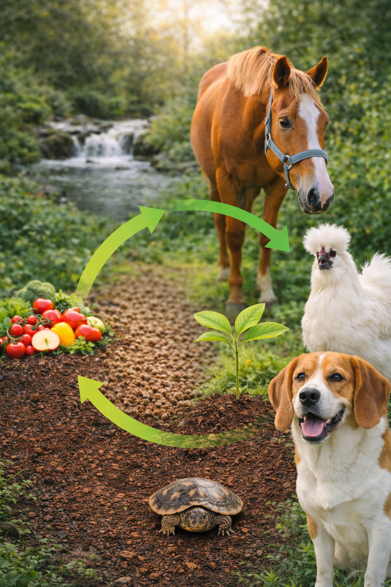

1
Regenerative sourcing loops
Locally sourced produce and organic material becomes BSFL feed, and partner farms receive mineral-rich compost for next-season crops.
Our origin story
White Eagle Nutrition was founded by a team that wanted better answers than conventional feed and fertilizer. We craft ethically-sourced, non-GMO BSFL-based foods that are science-backed, and intended to help animals thrive and ecosystmes flourish.

Our mission is to create and continuously fulfill a virtuous cycle where nutrients recovered from organic material help animals thrive, and the resulting wellbeing fortifies soils, research, and community care.
We track each loop of the cycle to ensure it keeps delivering compounding benefits for animals, caretakers, and the planet. Here’s what that commitment looks like in practice.
Locally sourced produce and organic material becomes BSFL feed, and partner farms receive mineral-rich compost for next-season crops.
Veterinary nutritionists, entomologists, and data scientists iterate formulations to align with species biology and peer-reviewed insights.
Consults, grants, and feeding plans equip households, shelters, and barns to turn nutrition gains into resilient multi-species care.
Savings fuel welfare grants, regenerative farming pilots, and co-published studies tracking digestibility, immunity, and lifecycle outcomes.
We analyze species biology to deliver precise amino and fatty acid profiles for longevity.
Our R&D team partners with universities to publish digestibility and immune studies on BSFL proteins.
Larvae are raised on upcycled produce in zero-waste facilities powered by renewable energy.
Nutrition bundles, community grants, and shelter partnerships keep animal wellness within reach.
FAO releases “Edible Insects,” accelerating global research into BSFL’s role in circular feed systems.
Regulation 2017/893 authorizes insect proteins, including BSFL, for aquaculture feed across Europe.
AAFCO formally recognizes dried BSFL larvae for poultry, opening regulated trials in North America.
Wageningen University publishes multi-species trials demonstrating BSFL meal matches fishmeal performance.
IPIFF-led lifecycle assessment reports BSFL feed reducing freshwater demand and cropland pressure versus soy and fishmeal.
Typical crude protein range reported for black soldier fly larvae in feed applications.[1]
Plant-based food waste reduction achieved in black soldier fly larvae bioconversion trials.[2]
Year that insect proteins authorized for aquaculture feed use (Regulation 2017/893).[3]
AAFCO-approved dried BSFL larvae uses in poultry, swine, finfish, and adult dog food channels.[4]
BSFL process and product references
Partner with us to transform how your animals eat, feel, and age. We offer retail, wholesale, and shelter programs rooted in compassionate ethics.